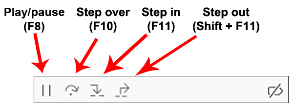
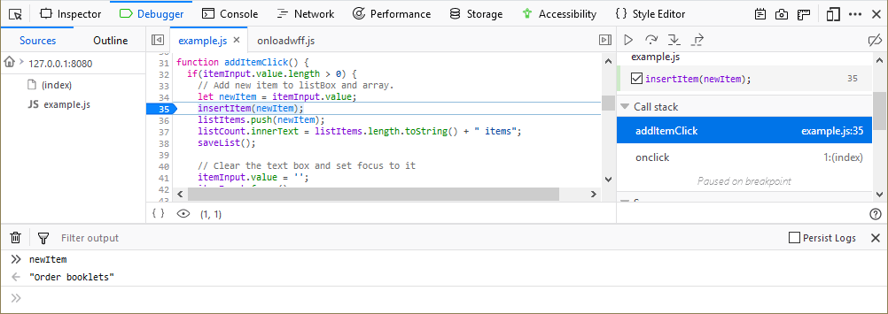
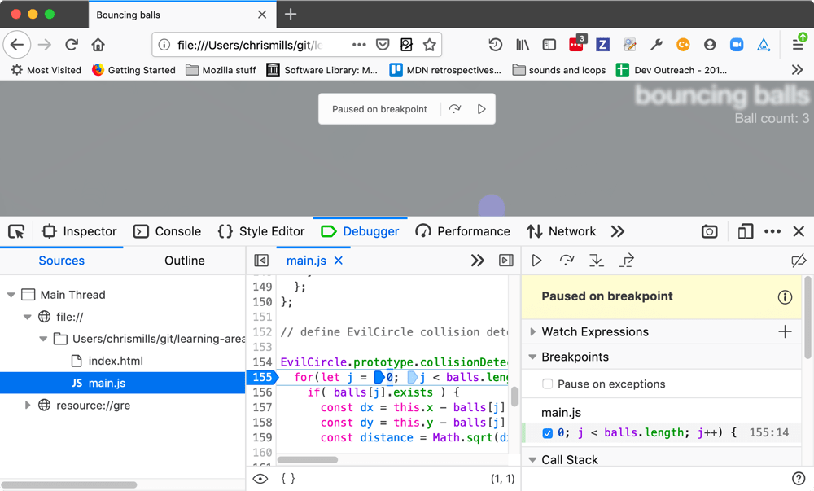

When the debugger is stopped at a breakpoint, you can step through it using four buttons in the toolbar:

In order, the buttons are:
{{EmbedYouTube("RQBwEk0-xe0")}}
When paused, you can press the Esc key to open and close the split console to gain more insight into errors and variables:

Since Firefox 70, when your code is paused on a breakpoint an overlay appears on the viewport of the tab you are debugging.

This lets you know what kind of breakpoint the code is paused on (breakpoint, event breakpoint, etc.), and also provides a step button and a play button. The thinking here is that if you've got your DevTools open in a separate window, as many people do, it can be easier to have the buttons available right there to move the code forward while you are looking at the result.
If you want to turn this feature off, since Firefox 71 you can do so by going to about:config in a new tab, setting the devtools.debugger.features.overlay pref to false, and restarting the browser.
New in Firefox 71, the source pane now gives you an instant preview of the variables on each line of code you've stepped through. See Set a breakpoint > Inline variable preview for more information.